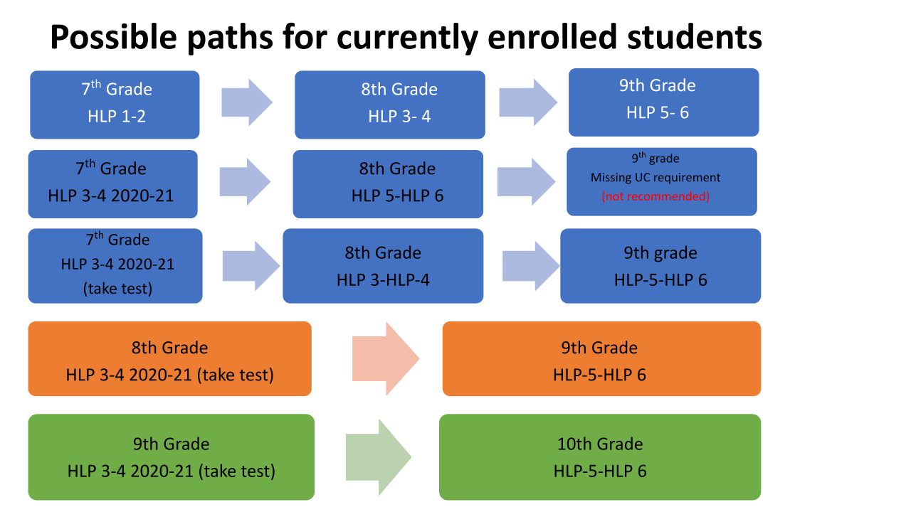

All frequently asked questions for the Hindi Language Program.
The first class will be held on the date mentioned and email communication will be sent prior to the class with the Zoom link.
HLP 1st Year (Level 1 and Level 2) Thursday 6PM to 8:30PM, Friday 6PM to 8:30PM.
HLP 2nd Year (Level 3 and Level 4) Monday 6PM to 8:30PM, Thursday 7PM to 8:30PM.
HLP 3rd Year (Level 5 and Level 6) Monday 6PM to 8:30PM, Thursday 6PM to 8:30PM.
Yes, if the student completes the course through HLP 6, they will satisfy both high school and UC requirements. For a specific example, see the image below. Note: this is for PUSD requirements only.

The courses are done on a semester schedule with each level taking one semester.
A student can join the program in 7th, 8th, 9th, 10th, or 11th grade in order to complete all course requirements for graduation.
Each week we have 5 hours of instruction, out of which one hour is dedicated to planning and extra help to the students. The five hours is divided between two or three days based on the class agreement.
No, all levels are done in pairs, for example, a student must complete both HLP 1 and 2 if they sign up, they cannot do only Level 1 or Level 2.
Yes, they have to give a qualifying test for reading, writing, and speaking proficiency.
No, however, if they take HLP in middle school and continue in High School they will be able to meet the UC a-g requirement.
UCs require 10 credits for Fine Arts, and 5 of those Fine Arts Credits can be met with a Foreign Language Class.
As regards SDUSD specifically, the district has given the following guidance:
Students enrolled in world languages courses at District-approved Independent World Languages Schools (IWLS) may earn graduation credit while enrolled at a District high school in Grades 9 – 12 (per Title 5 of the California Code of Regulations). Two years of the same language are needed – equivalent to the second level of high school instruction. If students complete, at a minimum, a world language level 3-4 course and receive a passing grade, they will meet the SDUSD World Languages graduation requirement.
Per Title 5 of the California Code of Regulations, graduation credits can only be earned when the IWLS world languages courses are taken concurrently during the students' SDUSD high school years. For instance, students taking Hindi 3-4 at the HLP IWLS site while concurrently enrolled at an SDUSD high school (Grades 9-12) will earn two credits for that academic year (provided they passed the course) as well as meet the SDUSD Languages Other Than English (LOTE) Graduation Requirement. However, students enrolled in middle school (Grades 7-8) can still take world language courses at an IWLS site, but graduation credits will not be earned, and the SDUSD LOTE Graduation Requirement will not be met.
Taking a Hindi course at HLP during the students' middle school years will allow them to be more proficient in the target language and take higher levels of the same language while concurrently enrolled at one of SDUSD's high schools. If students take a Hindi level 7-8 at HLP while concurrently enrolled at an SDUSD high school site, they will earn two World Languages graduation credits and meet the SDUSD LOTE Graduation Requirement, as well as have the opportunity to apply for the prestigious CA State Seal of Biliteracy.
No, this class will only be counted for credit if you speak with your high school's registrar. PUSD, SDUSD, and SDUHSD counselors and registrars are aware of this program and can assist you.
No, only classes taken during high school will be considered for credits, however, the student will be eligible to join HLP 5 and HLP 6 in high school.
It will not be counted towards credits, but if you are ok to repeat the courses for stronger foundation, then it is allowed.
Yes, the program is open for all. However, for credits please talk to your school counselor for credit transfer.
No, check with your counselor for available testing programs.
Fill out the registration form and, upon receipt of a confirmation email, follow the instructions to send the $1100 course fee, which includes registration.
Yes, absolutely, HLP is designed for non-Hindi speaking kids interested in learning a new language as well.
No, strong foundation of language comes with both written and spoken skills, both the skills will be introduced from HLP 1 onwards.
Sessions coincide with the school year and last from August until June.
Total course cost is $1100.
Yes, check with your registrar to ensure your credits transfer from HLP.
Yes, speak to your school registrar or counselor to transfer HLP credits to your school transcript.
Yes, talk to your high school's registrar about your participation in HLP and they will guide you through the process of transferring the credits to your high school transcript.
HLP was given accreditation based on the hybrid model which means most classes are conducted online and students only participate in-person for field trips, tests, social interaction etc. every 4/5 weeks.
The UC's require two years of foreign language, but recommend three. HLP levels 1-4 satisfy the two year requirement and levels 5 and 6 will count for three years of foreign language.
In SDUHSD, speak to your school's counselor and get the off campus course permission form to fill out before starting HLP. They will be able to guide you from there. For more information on credits, visit the SDUHSD website.
The Independent Language Study Form must be completed by the HLP Principal Director. Both the parent and director must sign the form. The completed form is then given to the student's assigned SDUSD counselor.
It requires two consecutive years of study in WASC accredited foreign language school. Anything done before 8th grade is not considered.
The grades are sent to the high school and then the high school provides the grades to the UCs on the student's official transcript.
A standard letter grading system is used on the student's official transcript. (A, B, C, D, F)